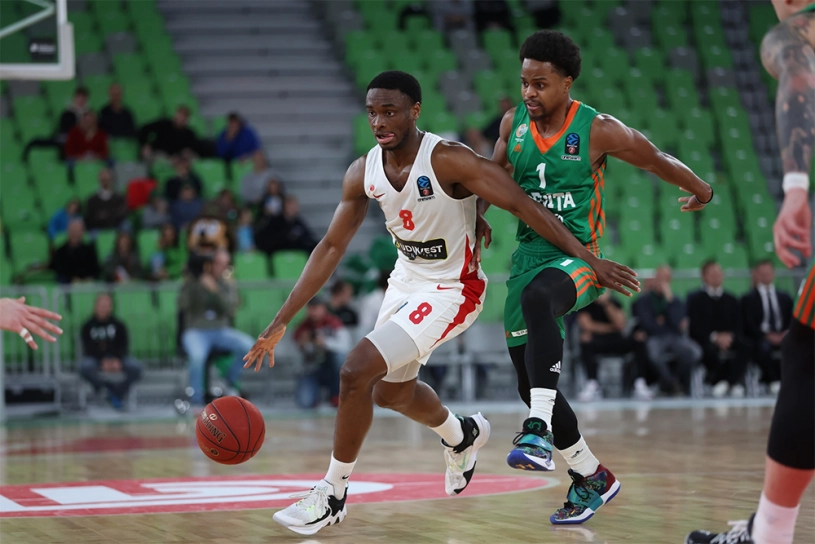
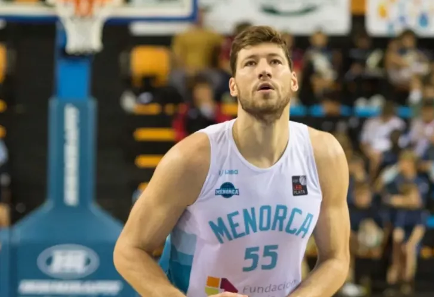
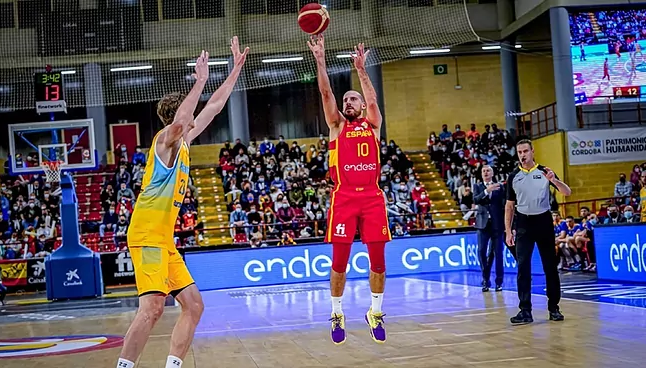
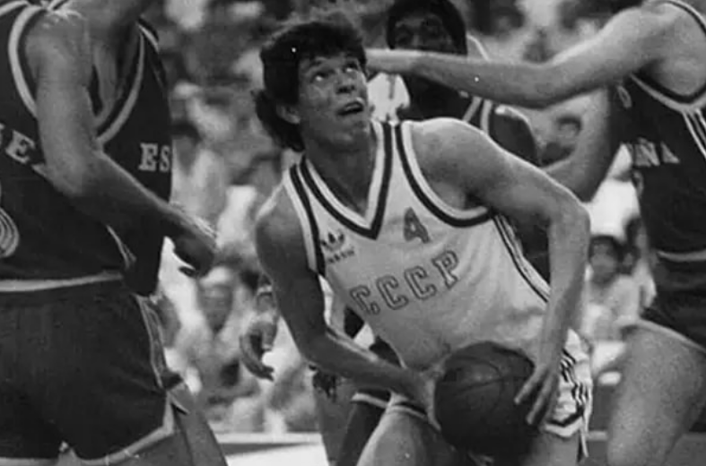

Ucrania, el baloncesto y la guerra

[zonadebasquet.com]
Lo que nunca quisimos ver, el conflicto bélico derivado de la invasión rusa de Ucrania, sigue en plena actividad. De esta forma, a uno de los países europeos más grandes en extensión, la vida le ha cambiado por completo, con cuantiosas pérdidas de vidas, ciudades destrozadas y actos que ojalá jamás ocurriesen en ningún lugar... Leer más
Slava Kravtsov, a la selección

[menorca.info]
El jugador del Hestia Menorca, Slava Kravtsov, ha sido uno de los escogidos por su país para formar parte de la selección de Ucrania ante la quinta ventana FIBA organizada para la fases clasificatoria del mundial de baloncesto 2023... Leer más
España y Ucrania aparcan la guerra por el baloncesto

[marca.com]
España y Ucrania aparcaron la guerra que por la mañana había estallado en el este de Europa y dejaron paso al baloncesto. En un partido muy complicado de jugar para ambos equipos (para los ucranianos más, claro), España se impuso por un claro 88-74, lo que deja expedito el camino hacia la segunda fase... Leer más
Aleksander Volkov, el mejor jugador de la historia del básquet ucraniano, toma las armas

[santafebasket.com.ar]
La invasión Rusia a Ucrania ha provocado que numerosos deportistas de élite y exdeportistas entren a formar parte del ejército ucraniano para defender su país. Uno de ellos es Aleksander Volkov, mítico ala-pívot que fue campeón olímpico con la Unión Soviética en los Juegos de Seúl 1988. Una imagen suya publicada en Twitter... Leer más